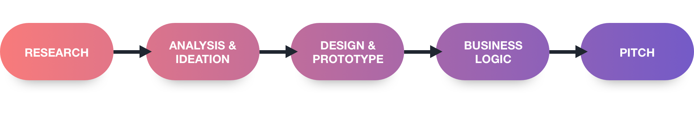

ADAM
Student support system
51% of students in further education didn't seek help when they needed it. This statistic displays a problem for universities personal help programmes, how can you help someone if you don't know they need help? We wanted to know how we can help these individuals in need.
This project was part of a programme called 3DS, which is designed to help aspiring entrepreneurs create a product. We competed against six other product teams to develop a comprehensive product plan in just two days.
ADAM is a safe, first response for students who need support but aren't ready to seek it. ADAM provides informative articles about personal issues that are designed to help answer common problems and relieve anxiety. It also includes chat interfaces for 24/hr support all while staying as anonymous as needed.
Team
Mark Brown
Zhong (David) Shenghong
Amna Sadia Hussain
Role
User Research, Leading Ideation, Sketches, Lo-fi/Hi-fi prototypes, Business logic
Design Process
User Interviews & Survey
To gain a deeper understanding of the student community, we conducted some guerrilla interviews on campus in London. Combined with a survey, with results from other student communities, we came to the following conclusions:
Design
Being the sole designer of the group, I led an ideation session that included brainstorming exercises and rapid prototyping tasks. The efforts of our collaboration resulted in a paper prototype that was functional and easy to use.
I then took our paper sketches and created some detailed screen designs and a simple prototype using inVision. Our ability to create a complete product design in short time gave us an advantage over the other teams who only just specified the concepts and financial details of the product.

Finacial Model Development
To identify how best to market and promote such a product comes down to who uses it and how we fund it, we knew who the user was but how would the product make money? The nature of the product reflected heavily on the funding approach.
We chose to be a non-profit as our mission was to help people in need, not make money from these people. It has a more significant impact on potential investors which included: universities, government funding, and local corporations. These sources were thought to be the primary source of financing, using investors like this ensures that ADAM is accessible with no cost to those who need it.
Pitching & Awards
Being the sole designer of the group, I led an ideation session that included brainstorming exercises and rapid prototyping tasks. The efforts of our collaboration resulted in a paper prototype that was functional and easy to use.
I then took our paper sketches and created some detailed screen designs and a simple prototype using inVision. Our ability to create a complete product design in short time gave us an advantage over the other teams who only just specified the concepts and financial details of the product.
The Takeaway
The responsibility of designing a product and thinking about how it makes money produced new challenges allowing me to reflect on
the real product design process and how it might be affected by financing.
Understanding every aspect of how the company works (or will work) and fusing this with human-centred design can provide a realistic
and purposeful product.